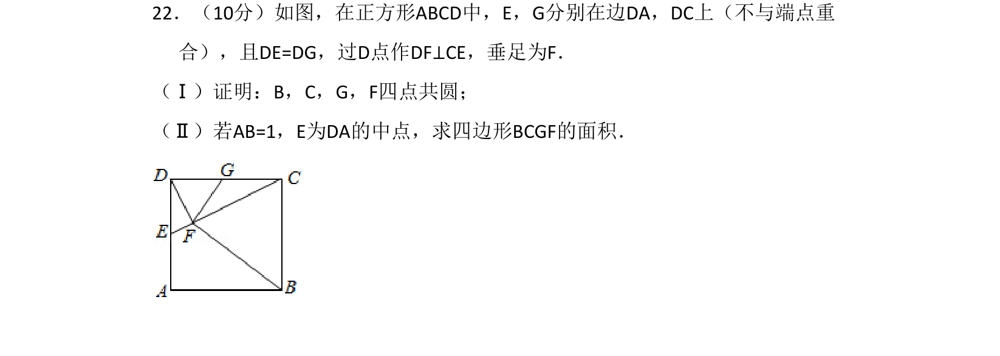
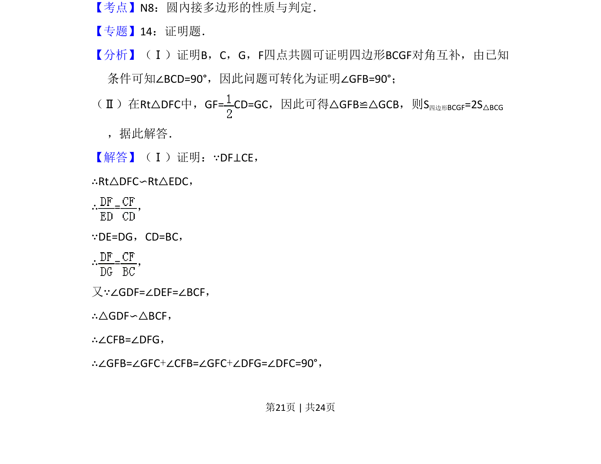
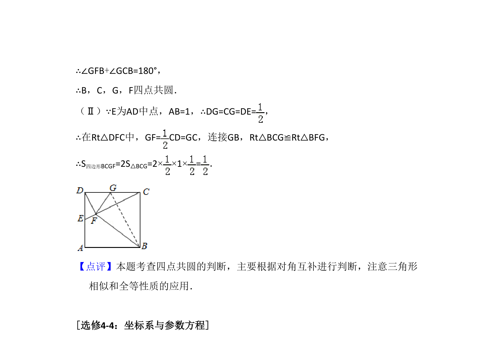

考点：四点共圆 相似三角形 全等三角形 面积计算

考查正方形中四点共圆证明及四边形面积计算，涉及相似与全等三角形。


📄 原 PDF 第 21 页：
素材/真题/吉林/2008-2024·（吉林）数学高考真题/2016年高考数学试卷（理）（新课标Ⅱ）（解析卷）.pdf
22．（10分）如图，在正方形ABCD中，E，G分别在边DA，DC上（不与端点重 合），且DE=DG，过D点作DF⊥CE，垂足为F． （Ⅰ）证明：B，C，G，F四点共圆； （Ⅱ）若AB=1，E为DA的中点，求四边形BCGF的面积．
【考点】N8：圆內接多边形的性质与判定．菁优网版权所有 【专题】14：证明题． 【分析】（Ⅰ）证明B，C，G，F四点共圆可证明四边形BCGF对角互补，由已知 条件可知∠BCD=90°，因此问题可转化为证明∠GFB=90°； （Ⅱ）在Rt△DFC中，GF= CD=GC，因此可得△GFB≌△GCB，则S 四边形BCGF=2S△BCG ，据此解答． 【解答】（Ⅰ）证明：∵DF⊥CE， ∴Rt△DFC∽Rt△EDC， ∴=， ∵DE=DG，CD=BC， ∴=， 又∵∠GDF=∠DEF=∠BCF， ∴△GDF∽△BCF， ∴∠CFB=∠DFG， ∴∠GFB=∠GFC+∠CFB=∠GFC+∠DFG=∠DFC=90°，